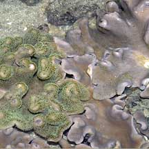
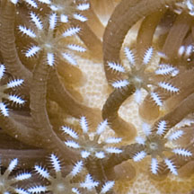
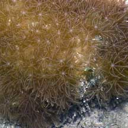

|
|
| soft corals text index | photo index |
| Phylum Cnidaria > Class Anthozoa > Subclass Alcyonaria/Octocorallia |
| Soft
corals Order Alcyonacea updated Aug 2025
Where seen? Soft corals are commonly seen on many of our shores. Some resemble flowery bushes, others giant leathery disks. Yet others are tiny and overlooked. They are found growing on boulders and other hard surfaces, as well as among coral rubble and living hard corals on the reef flats. What are soft corals? Soft corals belong to Phylum Cnidaria which includes the more familiar sea anemones, hard corals and jellyfishes. Soft corals are members of the Subclass Alcyonaria/ Octocorallia that includes gorgonians and sea pens. Within this Subclass, the Order Alcyonacea includes flowery soft corals (Family Nephtheidae) as well as leathery soft corals (Family Alcyoniidae). Features: Soft corals are colonies of tiny, individual polyps linked to one another. Soft corals can look like branching bushes or trees. They may also be flatter and look like mushrooms. When exposed at low tide, they often flop over and look like a pile of jelly or fried eggs! When submerged, however, they expand into beautiful plant-like forms and some appear 'furry' as the tiny polyps expand. Soft coral polyps have 8 (or multiple of 8) tentacles that are pinnate (branched or feathery). Some soft corals like leathery soft corals have two kinds of polyps: Autozooids have long stalks with eight branched tentacles and emerge from the shared leathery tissue. Siphonozooids may be much shorter polyps or don't even emerge from the shared tissue and function as water pumps for the colony. Sometimes mistaken for sea anemones. Some large sea anemones and large leathery and flowery soft corals may be mistaken for one another. Here's more on how to tell apart large 'hairy' disk-like animals on the shore. Soft support: Although there are some exceptions, many soft corals don't produce a hard skeleton. Instead in colonial soft corals, the polyps are connected by a shared tissue. Tiny spikes of calcium carbonate, called sclerites, are embedded in the tissue mass. These sclerites are used to identify soft coral species. In some, the sclerites are far apart resulting in a more floppy soft coral. In others, the sclerites are closer or fused together to form firmer support. The entire tissue mass is covered with a skin and the polyp tentacles emerge through this skin. In some soft corals, the skin can be quite tough and leathery looking, thus these are often called leathery soft corals. Out of water, soft corals may flop over and may look small. But underwater, they expand and spread out to maximise the feeding surface. |
 St. John's Island, Aug 05  Polyps of a leathery coral |


| What do they eat? Most soft corals
feed on plankton, some also feed on finer particles. Like other cnidarians,
soft coral polyps have tentacles with stingers to capture food. Many soft corals harbour microscopic, single-celled symbiotic algae (zooxanthellae) within their bodies. The algae undergo photosynthesis to produce food from sunlight. The food produced is shared with the host, which in return provides the algae with shelter and minerals. Role in the habitat: Some soft corals are homes to tiny animals. Some tiny animals eat soft corals and look just like their much larger prey. |
 Often seen in a pair. Pulau Sekudu, May 12 |

| Soft coral babies: Soft corals can
reproduce asexually: budding of new polyps enlarges the colony. However,
they also reproduce sexually. The polyps may produce sperm or eggs.
The eggs develop into free-swimming larvae that drift with the plankton
before settling down to start a new colonies. Human uses: Soft corals protect themselves with unusual substances which are being studied for possible anti-cancer properties. Soft corals are also harvested from the wild for the aquarium trade. Living coral reefs, however, are worth far more to humans when they left alone. Reefs bring in tourists which generate business beyond the shore (e.g., hotels, restaurants and travel-related industries). Status and threats: Like other creatures of the sea, soft corals are threatened by human activities that degrade or destroy the habitat. Trampling by careless visitors, and over-collection also have an impact on local populations. |
| Some soft corals on Singapore shores |


 |
 |
 |


| Order
Alcyonacea recorded for Singapore from Checklist of Cnidaria (non-Sclerectinia) Species with their Category of Threat Status for Singapore by Yap Wei Liang Nicholas, Oh Ren Min, Iffah Iesa in G.W.H. Davidson, J.W.M. Gan, D. Huang, W.S. Hwang, S.K.Y. Lum, D.C.J. Yeo, 2024. The Singapore Red Data Book: Threatened plants and animals of Singapore. 3rd edition. National Parks Board. 258 pp. STOLONIFERA GROUP
SCLERAXONIA GROUP
Some Gorgonians are included in this group |
||||||||||||||||||||||
Other 'soft coral' orders Order Helioporacea
Order Pennatulacea (sea pens) |
| Threatened
soft corals of Singapore see list of threatened cnidarians |
|
Links
References
|